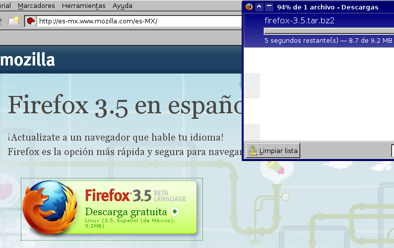
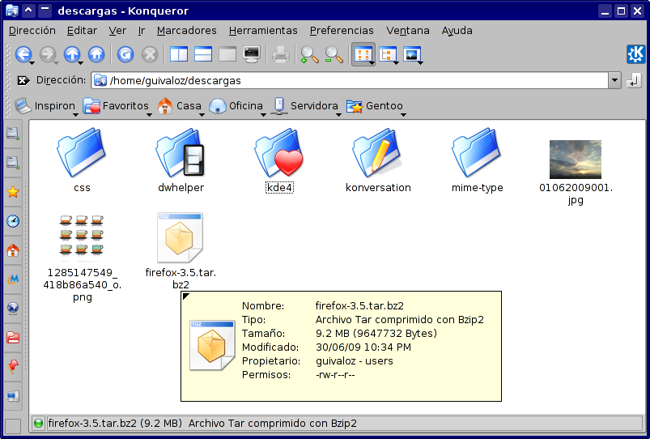
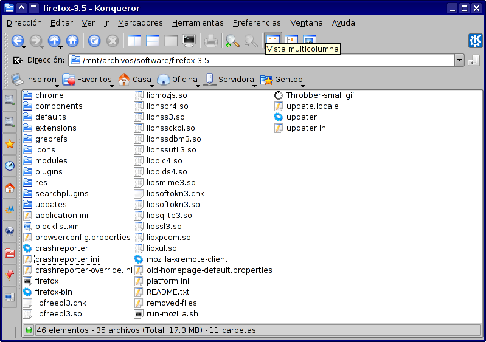
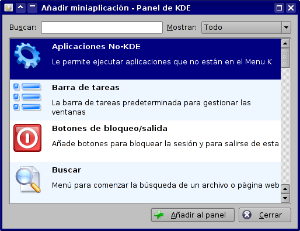
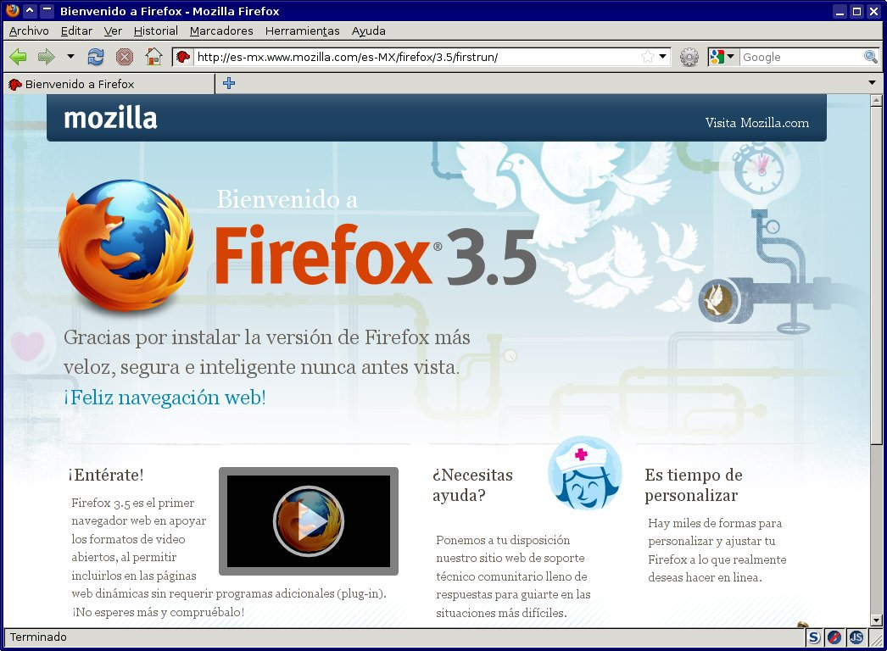
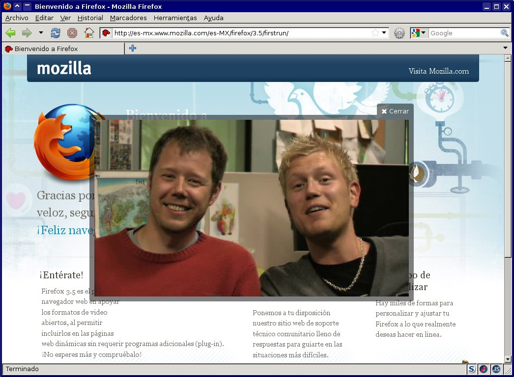

Firefox 3.5
Mozilla Firefox 3.5 ya está disponible para su descarga y nos brinda muchas novedades.
02 July 2009
Mozilla Firefox 3.5 ya está disponible para su descarga y nos brinda muchas novedades. Entre las que destaca:
- Ya hay versión en Español-Mexicano. No sólo los menús y las ventanas del programa están en nuestro idioma y región. También preferirá el lenguaje es-MX al ingresar a sitios multilingües.
- Más rápido que la versión 3. Ya lo estoy usando... y ¡es el doble de rápido!.
- Implementación de los elementos video y audio de HTML 5, incluyendo audio codificado en Vorbis y vídeo codificado en Ogg Theora de manera nativa.
- Disponible en más de 70 idiomas.
- Herramientas mejoradas para controlar tus datos privados, incluyendo un modo privado de navegación.
- Mejor rendimiento en aplicaciones web usando el nuevo motor de JavaScript TraceMonkey.
- Implementación de JSON nativo, y múltiples hilos de ejecución web.
- Mejoras al motor de representación Gecko, incluyendo interpretación especulativa para una representación del contenido más rápida.
- Implementación de nuevas tecnologías web tales como: tipografías descargables, consultas de medios CSS, nuevas transformaciones y propiedades, selectores de consultas JavaScript, almacenamiento local de HTML 5 de aplicaciones en modo sin conexión, texto canvas, perfiles ICC, y transformaciones SVG.
Copiando la publicación Adios iceweasel, bienvenido Firefox 3.5 de Antonio Martínez he hecho el siguiente procedimiento, paso a paso, para instalar el Firefox 3.5 de forma independiente a la distribución de GNU/Linux que use. Vea la publicación completa para mostrarle...
- Descargue el Mozilla Firefox 3.5 en español-mexicano.

- Obtendrá el archivo firefox-3.5.tar.bz2 el cual debe desempacar.

- Determine la ubicación donde desea conservar el Firefox 3.5. Puede tenerlo en su home y con los permisos del usuario normal. No es necesario instalarlo como root. Yo lo mantengo en /mnt/archivos/software/

- Para tener un icono en la barra de tareas del KDE 3.5 de un clic con el botón derecho en la barra y elija Añadir miniaplicación al panel.

- Elija la opción Aplicaciones No-KDE

- Llene los campos de la ventana de diálogo Configuración de aplicaciones no-KDE como se muestra. El ejecutable debe ser la ruta donde se encuentran los archivos que desempacó, más el archivo firefox. El icono lo encontrará en icons/mozicon50.xpm

- Así tendrá listo el icono en la barra de tareas para ejecutarlo.

- No deje de probar las nuevas capacidades para ver video y audio... ¡sin depender del plug-in Adobe Flash!

